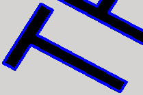

Sélectionnez le contour à graver à l'aide d'arêtes ou d'esquisses. La géométrie contiguë est automatiquement enchaînée. Cette trajectoire d'outil requiert une limite fermée.

Sélectionner une zone fermée